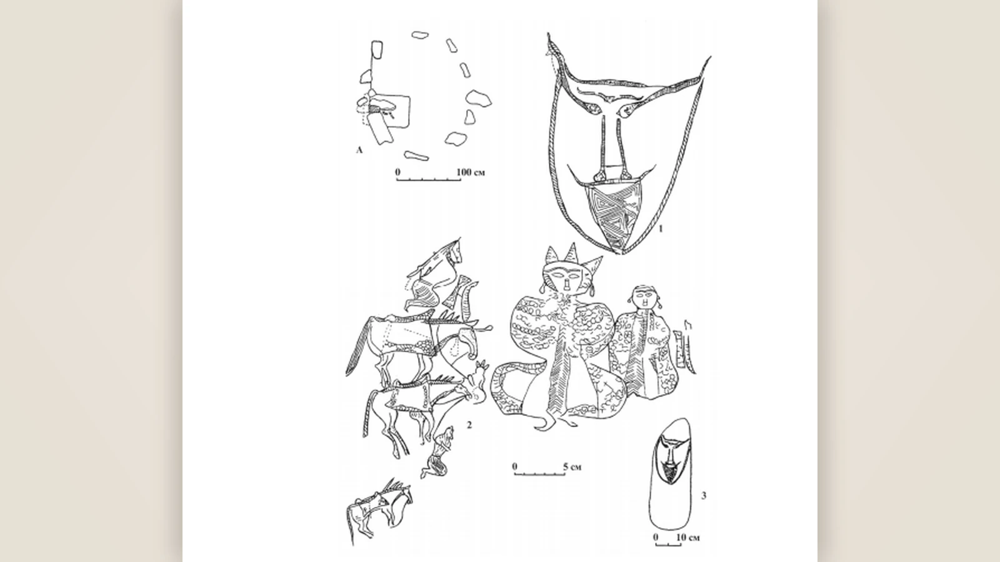
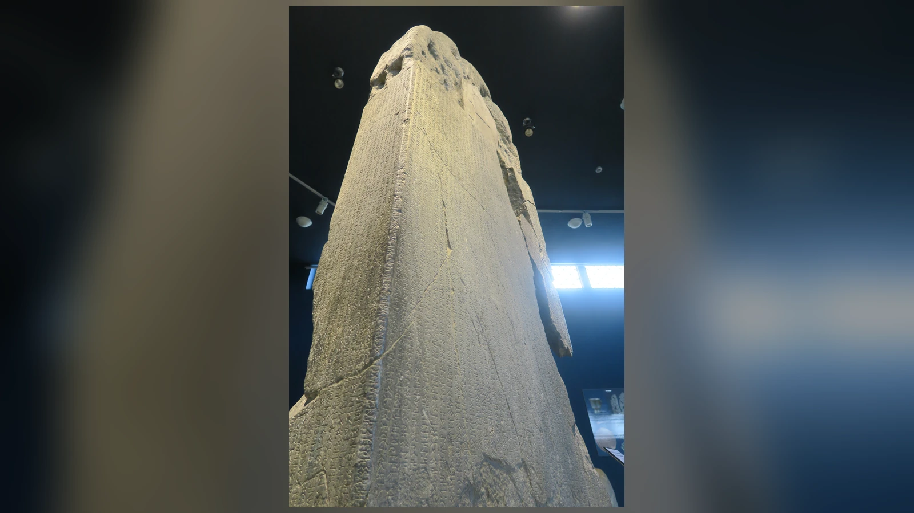
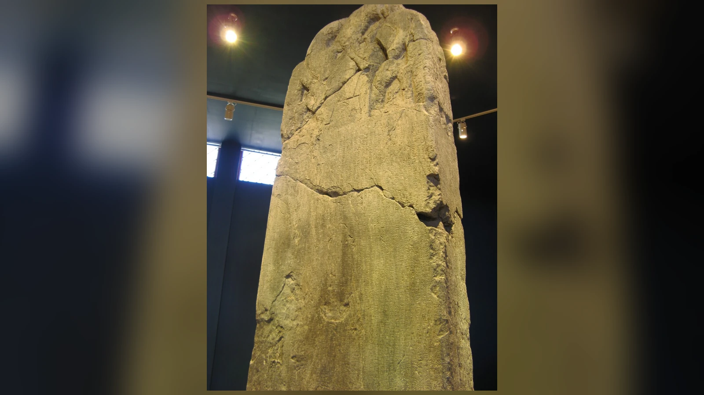
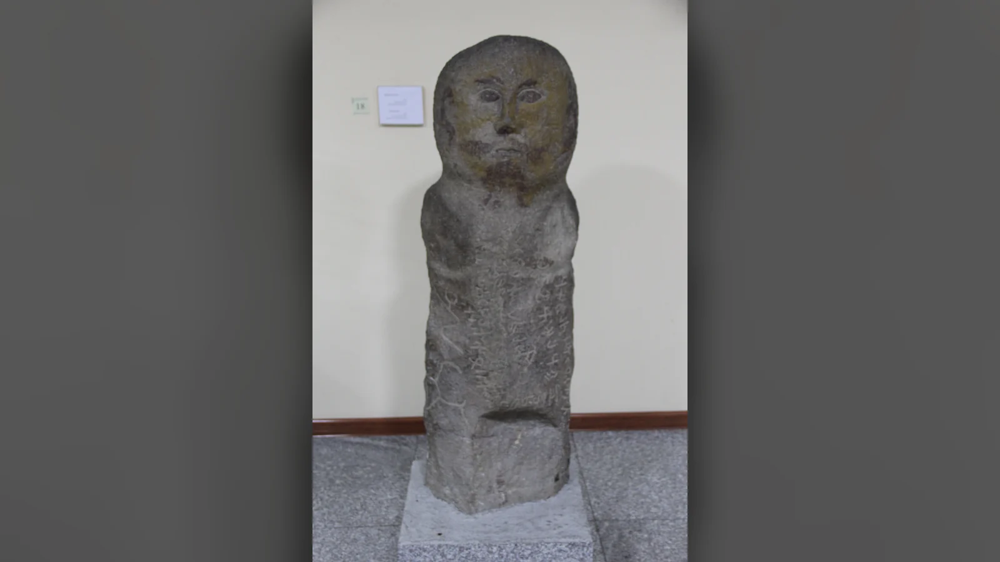
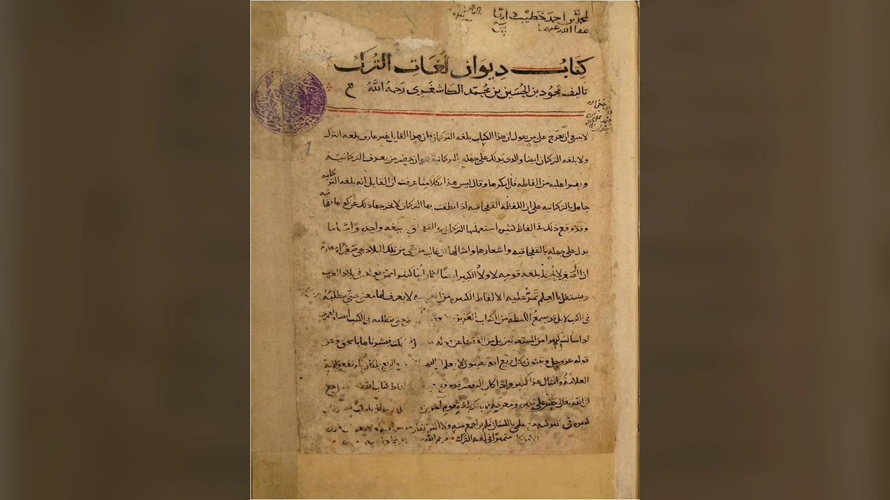
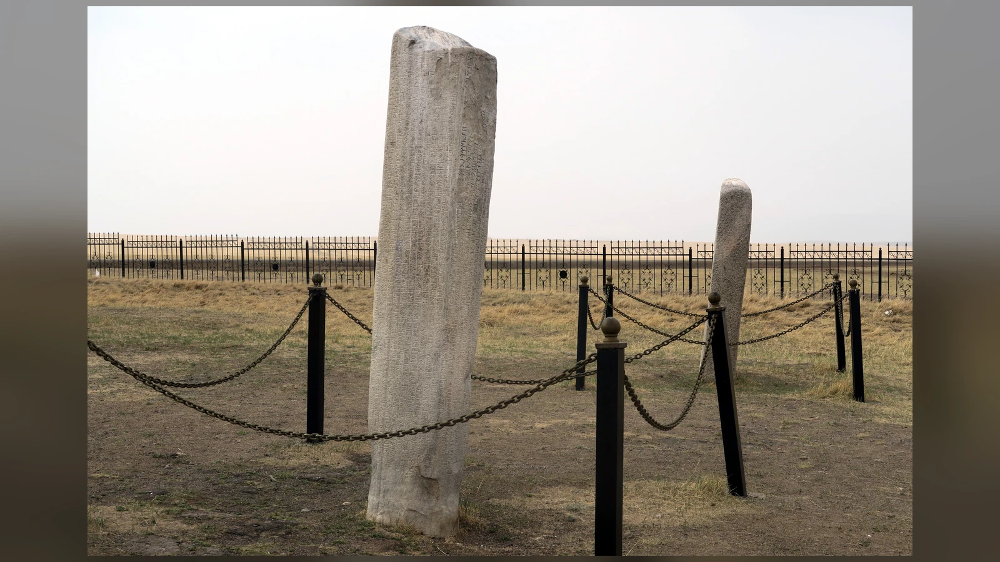
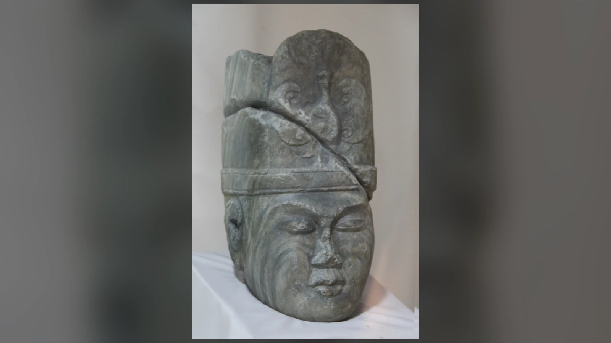
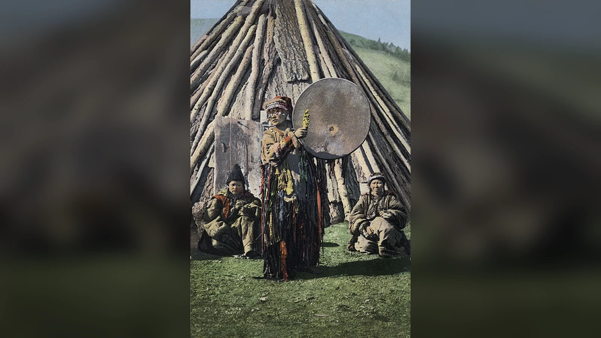
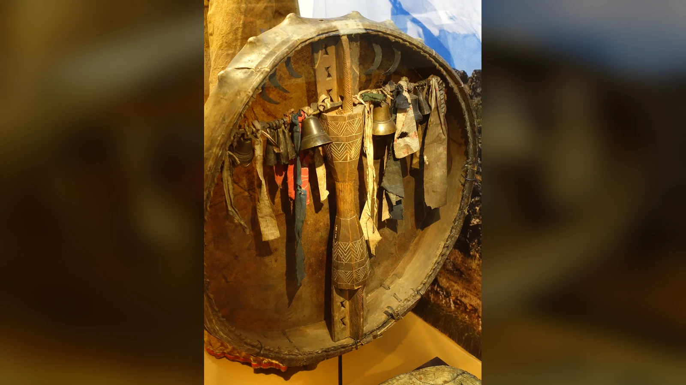

Umay Ana kimdir? En kısa ve güvenli cevap şu: Umay, erken Türk yazılı kaynaklarında adı açıkça geçen, dişilik ve annelikle ilişkilendirilen, daha sonraki Türk topluluklarının inançlarında ise özellikle doğum, lohusalık ve çocukların korunması çevresinde yaşamaya devam eden kutsal bir varlıktır. Onu “Türklerin koruyucu tanrıçası” diye adlandırmak okuyucu açısından anlaşılırdır; fakat bu ifade, Zeus, Hera veya Athena gibi ayrıntılı kişiliği ve aile ağacı yazılı mitlerle bilinen bir Greko-Romen tanrıçasını düşündürmemelidir. Umay hakkındaki en eski kayıtlar kısa, yoğun ve bağlama bağlıdır.
Bugün internette karşılaşılan Umay portresi çok daha ayrıntılıdır: beyaz saçlı veya kanatlı bir kadın, üç boynuzlu taç, güneş ışıkları, kuş biçimi, belirli bir üçgen sembol, Tengri’nin eşi, Ak Ana’nın başka adı, Kara Umay’ın iyi ikizi… Bunların tamamı aynı kanıt düzeyinde değildir. Sekizinci yüzyıl yazıtlarında Umay adı gerçekten vardır. Kül Tigin Yazıtı’nda Bilge Kağan annesini Umay’a benzetir; Tonyukuk Yazıtı’nda Umay, Tengri ve kutsal Yer-Su ile birlikte anılır. On birinci yüzyılda Kaşgarlı Mahmud ise Dîvânu Lugâti’t-Türk’te “umay” sözcüğünü doğumdan sonra çıkan eş/son, yani plasenta bağlamında kaydeder ve onunla ilişkili bir halk inanışından söz eder. Buna karşılık Umay’ın saç rengini, yüzünü, elbisesini veya değişmez bir geometrik amblemini tarif eden erken bir Türk metni elimizde yoktur.
Umay’ın hikâyesi bu nedenle tek bir destandan okunamaz. Yazıtlar, sözlükler, daha geç dönem Türk topluluklarından derlenen etnografik kayıtlar, halk inanışları ve arkeolojik/ikonografik yorumlar birlikte değerlendirilmek zorundadır. Bu kaynaklar aynı yüzyıla ve aynı topluluğa ait değildir. Tarihsel Umay ile modern Türk mitolojisi anlatılarındaki Umay arasındaki farkı anlamanın anahtarı da budur: erken kaynaklarda kısa fakat güçlü izler bırakan kutsal varlık, sonraki yüzyılların inançları ve çağdaş kültürel yorumlarla çok daha ayrıntılı bir kişiliğe dönüşmüştür.
Umay Ana Kimdir ve Neyi Temsil Eder?
Umay için “tanrıça”, “koruyucu ruh”, “dişi kutsal varlık”, “iye” ve “annelik-doğumla ilişkili kutsal güç” gibi farklı tanımlar kullanılır. Bu çeşitlilik yalnız modern araştırmacıların kararsızlığından kaynaklanmaz. Eski Türk dinî dünyasını keskin görevleri bulunan düzenli bir Olimpos panteonu gibi yeniden kurmaya çalışmak başlı başına sorunludur. Yazıtlar bize inanç sisteminin bütün ayrıntılarını açıklayan bir teoloji kitabı bırakmaz; belirli siyasi ve tarihî olaylar içinde Tengri, Umay ve kutsal Yer-Su gibi güçleri anar.
Kül Tigin ve Tonyukuk metinlerinin sağladığı en güvenli sonuç, Umay’ın sekizinci yüzyılda sıradan bir kelimeden fazlası olarak kutsal bağlamda tanındığıdır. Bilge Kağan’ın annesini “Umay gibi” nitelemesi, Umay’ın dişi ve koruyucu niteliğini anlamamız açısından önemlidir. Tonyukuk’taki bağlam ise Umay’ın etkisini yalnız doğum odasına kapatmayı zorlaştırır; burada askerî-siyasi bir mücadelede Tengri ve kutsal Yer-Su ile birlikte yardım eden güçler arasında anılır.
Daha sonraki etnografik kayıtlar Umay’ı hamile kadın, lohusa, bebek ve küçük çocuk çevresinde çok daha ayrıntılı biçimde gösterir. Altay-Sayan sahasındaki çeşitli topluluklarda Umay/Imay benzeri adlarla kaydedilen koruyucu varlık, çocuğun yaşam gücü, sağlığı ve büyümesiyle ilişkilendirilmiştir. Fakat bu geç kayıtları doğrudan sekizinci yüzyıla kopyalamak doğru değildir. Etnografya eski bir inancın olası devamlarını gösterebilir; aradaki yüzyıllarda hiçbir değişim yaşanmadığını kanıtlamaz.
Bu nedenle “Umay Ana neyi temsil eder?” sorusuna en dengeli cevap, annelik, doğum, çocuğun yaşamı ve korunması, soyun devamı ve bazı erken siyasi bağlamlarda hanedanın koruyucu kutsallığı olacaktır. “Bereket tanrıçası” ifadesi bütünüyle yanlış değildir; ancak tek başına kullanıldığında Umay’ın yazıtlardaki siyasi ve koruyucu boyutunu daraltır.

Umay Adı Nereden Geliyor?
Umay adının kökeni hakkında en sağlam dilbilimsel dayanaklardan biri Gerard Clauson’ın An Etymological Dictionary of Pre-Thirteenth-Century Turkish adlı sözlüğündeki kayıttır. Clauson, umay’ın temel anlamını “plasenta, son” olarak verir ve sözcüğün kadınlarla çocukları koruyan kutsal varlığın adı olarak da kullanıldığını belirtir. Bu iki anlam arasındaki bağ, doğum sonrasında çıkan plasentanın çocuğun yaşamıyla sembolik biçimde ilişkilendirilmiş olabileceği düşüncesini doğurmuştur.
Kaşgarlı Mahmud’un on birinci yüzyıldaki kaydı bu noktada daha da önemlidir. Dîvânu Lugâti’t-Türk’te Umay, doğumdan sonra rahimden çıkan, küçük kap veya kese benzeri şey olarak açıklanır ve çocuğun anne karnındaki “arkadaşı/eşi” şeklinde anlaşılır. Kaşgarlı ayrıca “Umayka tapınsa oğul bulur” biçiminde aktarılan bir söz kaydeder ve kadınların bununla uğur tuttuklarını belirtir. Buradaki tapın- fiilinin ve atasözünün nasıl çevrileceği konusunda modern yorumlar değişebilir; önemli olan, Umay sözcüğünün doğum ve plasenta çevresindeki halk inancıyla açık biçimde bağlantılı olmasıdır.
Plasenta birçok toplumda sıradan biyolojik atık olarak görülmemiştir. Çocuğun rahimdeki yaşamını sağlayan, doğumdan sonra bedenden ayrılan bu dokuya “eş”, “son” veya çocuğa eşlik eden unsur gibi anlamlar verilmesi şaşırtıcı değildir. Türk topluluklarındaki sonraki doğum geleneklerinde plasentanın gömülmesi, saklanması veya belirli kurallarla ortadan kaldırılması gibi uygulamalar görülür. Fakat her plasenta ritüelini doğrudan Umay kültünün kesintisiz kalıntısı ilan etmek tarihsel olarak fazla iddialıdır.
“Umay”ı modern isim sitelerinde görülen “umut”, “cennet”, “gökyüzü”, “mutluluk getiren kuş” gibi anlamlarla otomatik biçimde eşitlemek de sorunludur. Özellikle Hüma/Hümâ kuşuyla ses benzerliği, ayrı bir etimolojik tartışmadır. Clauson, Kırgızcada Umay’a benzeyen efsanevi kuş anlamını Farsça humāy ile ilişkilendirir. Dolayısıyla “Umay eski Türkçede kesin olarak devlet kuşu demektir” cümlesi güvenli değildir.
Umay Ana Gerçekten Eski Türk Kaynaklarında Geçiyor mu?
Evet. Umay’ın modern çağda uydurulmuş bir figür olduğu iddiası yanlıştır. Adı erken Türk runik yazıtlarında açıkça tanıklanır. Bununla birlikte yazıtların bize uzun bir “Umay Ana efsanesi” vermediğini özellikle belirtmek gerekir. Elimizde birkaç son derece değerli kullanım vardır ve tarihsel yorum bu kullanımların izin verdiği sınırlar içinde yapılmalıdır.
Kül Tigin Yazıtı’nın doğu yüzünün 31. satırında Bilge Kağan, babası İlteriş Kağan öldüğünde küçük kardeşi Kül Tigin’in yedi yaşında kaldığını anlatır. Ardından meşhur ifade gelir: umay teg ögüm katun kutıŋa inim Kül Tigin er at bultı. Talat Tekin’in çeviri geleneğinde bu cümle, öz olarak “Umay gibi annem hatunun kutu sayesinde kardeşim Kül Tigin erkeklik adını elde etti” biçiminde aktarılır. Çevirilerde “kut sayesinde”, “kutuna”, “devletine” gibi farklılıklar görülebilir; fakat Umay teg, yani “Umay gibi” benzetmesi tartışmanın merkezindedir.
Tonyukuk Yazıtı’nda da Umay adı geçer. Ünlü bölümde Tengri, Umay, ıduk yer sub birlikte anılır. Cümlenin ayrıntılı çevirisi yayınlara göre değişse de bağlam, bu kutsal güçlerin Türk tarafına yardım ettiği veya düşman üzerinde baskı kurduğu biçiminde yorumlanır. Burada Umay’ın savaş alanıyla ilişkili bir anlatının içinde bulunması önemlidir. Bu, Umay’ın işlevinin yalnız bebek beşiğiyle sınırlı olmadığını düşündürür.
Yenisey yazıtları içinde E 28 Altın Köl I’deki umay beg ifadesi ise tartışmalıdır. Nükhet Okutan Davletov ve Timur Davletov’un 2025 tarihli çalışması, önceki okumaları değerlendirerek Kormuşin’in “Umay Beg” yorumunu savunur ve Sibirya Türklerinin etnografik verileri üzerinden açıklama önerir. Fakat bu ifade üzerinde akademik fikir birliği yoktur. Dolayısıyla Altın Köl kaydını, Umay’ın “kesin savaş tanrıçası” olduğunun tartışmasız kanıtı gibi sunmak doğru olmaz.

Kül Tigin Yazıtı’nda Umay Neden İlbilge Hatun’a Benzetildi?
Kül Tigin metnindeki benzetmenin gücü, Umay’ı soyut bir doğurganlık kavramından daha geniş bir alana taşır. Bilge Kağan kendi annesi İlbilge Hatun’u Umay’a benzetmektedir. Üstelik cümle Kül Tigin’in çocukluktan yetişkin savaşçı statüsüne geçişini anlatan hanedan hikâyesinin içindedir. Anne, oğlun korunması ve yetişmesiyle; Umay benzetmesi ise bu koruyuculuğun kutsal niteliğiyle birleşir.
Buradan “hatun Umay’ın yeryüzündeki rahibesiydi” veya “her kağan Tengri, her hatun Umay sayılıyordu” gibi kesin bir kurum şeması çıkarmak mümkün değildir. Bununla birlikte kağan ailesinin meşruiyet dilinde kadın tarafının kutsallığının görünür olduğu açıktır. Aynı yazıtlarda İlteriş Kağan ile İlbilge Hatun’un Türk halkı yok olmasın diye göksel güç tarafından yükseltildiğinin anlatılması da hanedan çiftinin siyasi düzen içindeki ortak önemini gösterir.
Kut kavramı burada özel önem taşır. Eski Türk siyasi düşüncesinde kut, hükümdarlık talihi, göksel meşruiyet, yaşam ve kutsal güç gibi birbirine yaklaşan anlam alanlarına sahiptir. Kül Tigin cümlesindeki “annem hatunun kutu” ifadesi, Umay benzetmesiyle yan yana geldiğinde annelik ile hanedanın devamı arasında güçlü bir bağ kurar. Modern araştırmacılar bundan Umay’ın hatun ve hanedan koruyuculuğuyla ilişkili olabileceği sonucunu çıkarır.
Bu yorumun sınırı da açıktır: yazıt “Umay devlet tanrıçasıdır” demez. Ancak annelik, oğlun yetişmesi, kut ve hanedan bağlamının aynı cümlede birleşmesi, Umay’ı yalnız özel alandaki doğum koruyucusuna indirgemememiz gerektiğini düşündürür. Çocuğun yaşaması bir aile meselesiyken, kağan ailesindeki çocuğun yaşaması aynı zamanda hanedanın ve siyasi düzenin devamıdır.

- yüzyıla tarihlenen Türk taş heykeli, Moğolistan Ulusal Müzesi. Eser Umay’ın kesin tasviri değildir; erken Türk figür sanatına örnek olarak kullanılmıştır. Görsel: Gary Todd. Kaynak; CC0 1.0.
Kaşgarlı Mahmud Umay Hakkında Ne Anlatıyor?
Sekizinci yüzyıl yazıtlarından yaklaşık üç yüzyıl sonra Kaşgarlı Mahmud’un Dîvânu Lugâti’t-Türk’ü Umay konusunda başka türden bir pencere açar. Kaşgarlı bir mitoloji kitabı yazmaz; Türkçenin söz varlığını açıklarken sözcüklerin kültürel bağlamlarını da kaydeder. Umay maddesi bu nedenle on birinci yüzyıldaki dil ve halk inanışı açısından değerlidir.
Kaşgarlı’nın açıklamasında umay, doğumdan sonra çıkan plasenta/son ile bağlantılıdır ve çocuğun anne karnındaki arkadaşı veya eşi gibi düşünülür. Ardından Umay’a yönelik davranışın çocuk sahibi olmakla ilişkilendirildiği atasözü verilir. Bu kayıt, kutsal Umay adı ile doğumun biyolojik bir unsuru arasında güçlü bir anlam ilişkisi bulunduğunu gösterir.
Burada önemli bir ayrıntı vardır: Kaşgarlı Müslüman bir âlimdir ve metni İslam öncesi Türk dinini sistematik biçimde tarif etmeyi amaçlamaz. Dolayısıyla onun “Umay = plasenta” açıklamasını, “sekizinci yüzyıldaki Umay aslında hiçbir zaman kutsal varlık değildi” sonucuna dönüştürmek de; tersine bu kısa kaydı ayrıntılı bir tanrıça biyografisine genişletmek de doğru değildir. Yazıtlarla birlikte okunduğunda daha makul sonuç, aynı adın kutsal koruyuculuk ile doğum/plasenta anlam alanlarını yüzyıllar boyunca birbirine bağladığıdır.

Umay Ana Neden Çocukların Koruyucusu Sayılıyordu?
Çocuk koruyuculuğu Umay’ın en kalıcı özelliğidir. Kül Tigin metnindeki anne-çocuk-hanedan bağlamı erken bir işaret sunarken, Kaşgarlı’nın plasenta kaydı doğumla bağlantıyı güçlendirir. Altay, Hakas ve başka Sibirya Türk toplulukları üzerine 19. ve 20. yüzyıllarda yapılan etnografik derlemeler ise Umay’ı bebeğin ve küçük çocuğun yaşamıyla çok daha açık biçimde ilişkilendirir.
L. P. Potapov’un klasik çalışması, farklı Türk topluluklarındaki etnografik kayıtları erken yazıtlarla karşılaştırır. Bu kayıtlarda Umay bazen çocuğun ruhsal koruyucusu, bazen onun yaşam gücüyle ilişkili bir varlık, bazen de doğum ve lohusalık sırasında yardım eden dişi ruh olarak görünür. Çocuğun hastalanması veya huzursuzlaşması Umay’ın uzaklaşması ya da kötü güçlerin yaklaşmasıyla açıklanabilmiştir. Fakat bunların sekizinci yüzyıldaki Göktürk sarayında aynen uygulanan ritüeller olduğunu bilmiyoruz.
Beşik, doğum odası ve plasenta çevresindeki koruyucu pratiklerin mantığı anlaşılırdır. Doğum hem anne hem çocuk için tarih boyunca yüksek riskli bir eşikti. Modern tıp öncesinde doğum komplikasyonlarının, enfeksiyonların ve bebek ölümlerinin açıklanamadığı toplumlarda görünmez koruyucular ile zarar verici varlıklara ilişkin inanışların gelişmesi olağandışı değildir. Umay’ın koruyucu niteliği bu hayatî eşikte anlam kazanır.
Bu koruyuculuk yalnız kız çocuklarıyla sınırlı değildir. Kül Tigin erkek çocuktur ve Umay benzetmesi onun yetişmesi bağlamında kullanılır. Bu nedenle “Umay yalnız kadınları korurdu” ifadesi yanlıştır. Kadın, hamilelik ve lohusalık Umay’ın güçlü alanlarıdır; fakat çocukların cinsiyetinden bağımsız biçimde korunması ve bazı kayıtlarda hayvan yavrularının da gözetilmesi daha geniş bir işlev alanına işaret eder.
Umay Yalnız Anneleri ve Çocukları mı Koruyordu?
Tonyukuk Yazıtı bu sorunun cevabını karmaşıklaştırır. Umay burada bir doğum sahnesinde değil, askerî bir anlatının içinde Tengri ve kutsal Yer-Su ile birlikte anılır. Bazı araştırmacılar bunu Umay’ın topluluğun ve ordunun korunmasına kadar uzanan bir yetki alanının göstergesi olarak yorumlamıştır. 2025’teki Altın Köl çalışması da Sibirya verileri üzerinden Umay’ın savaşçı koruyuculukla ilişkilendirilebileceğini tartışır.
Ancak “Umay savaş tanrıçasıdır” demek, kaynakların taşıyabileceğinden daha kesin bir sınıflandırmadır. Tonyukuk metninde bir askerî yardım bağlamı vardır; fakat elimizde Umay’a savaş öncesi yapılan standart ritüelleri tarif eden erken bir el kitabı yoktur. Daha güvenli sonuç, Umay’ın kutsal koruyuculuğunun bazı erken metinlerde ev ve doğum alanının dışına taşabildiğidir.
Hanedan boyutu daha güçlüdür. İlbilge Hatun’un Umay’a benzetilmesi, Kül Tigin’in yetişmesi ve kut kavramı aynı bağlamda bulunur. Kağan soyunun devamı siyasi düzenin devamı olduğundan, annelik burada özel hayat ile devlet arasındaki sınırı aşar. Umay’ın “devlet tanrıçası” olduğu kanıtlanmış değildir; fakat hanedanın annelik ve soy devamı üzerinden kutsallaştırılmasında kullanılabilecek güçlü bir simge olduğu söylenebilir.
Umay ile Tengri Arasında Nasıl Bir İlişki Vardı?
Popüler Türk mitolojisi şemalarında Tengri ile Umay sıklıkla karı-koca olarak gösterilir. Erken yazılı kaynaklar bu kadar açık değildir. Tonyukuk Yazıtı Tengri, Umay ve kutsal Yer-Su’yu aynı cümlede anar; bu birliktelik Umay’ın yüksek kutsal statüsünü göstermesi açısından önemlidir. Fakat “Tengri’nin eşi Umay’dır” diyen bir erken Türk cümlesi elimizde yoktur.
Bazı araştırmacılar kağan-hatun ikilisinin Tengri-Umay ikilisiyle sembolik paralelliğini savunmuştur. Bilge Kağan’ın annesini Umay’a benzetmesi bu yorumu besler. Jean-Paul Roux ise Umay Hatun ile Tengri’yi doğrudan ilahi çift saymanın güvenli olmadığını özellikle vurgular. Aynı kutsal düzlemde anılmak, zorunlu olarak evlilik ilişkisi anlamına gelmez.
Eski Türk inanç dünyasını Yunan mitolojisindeki aile ağacına benzetmek burada yanıltıcı olur. “Tengri’nin karısı kimdi, çocukları kimdi?” sorusu, kaynakların kendi yapısından çok modern okuyucunun panteon beklentisini yansıtabilir. Umay ile Tengri arasında hiyerarşi, işlevsel yakınlık veya tamamlayıcılık tartışılabilir; tarihsel olarak belgelenmiş bir evlilik ise söylenemez.

Umay ve Yer-Su İnançları Aynı Sistemin Parçası mıydı?
Orhun çevresindeki metinler Tengri’yi, kutsal Yer-Su’yu ve Umay’ı aynı dünya görüşünün içinde gösterir. Yer-Su, belirli toprakların, dağların, suların ve ülkenin kutsallığıyla bağlantılı geniş bir kavram alanıdır. Tengri göksel egemenliğin en yüksek ifadesi olarak öne çıkarken, Umay ve Yer-Su insan hayatı ile siyasi düzenin farklı yönlerinde etkili kutsal güçler olarak görünür.
Bunu “üç tanrılı Türk dini” diye şemalaştırmak doğru değildir. Yazıtların amacı dinî sistemi maddeler hâlinde öğretmek değildir. Aynı şekilde bütün yer ve su ruhlarını tek bir kişisel tanrı gibi düşünmek de yanıltıcıdır. Metinlerin gösterdiği şey, insan ve devlet hayatının gök, yeryüzü, soy ve kutsal çevreyle ilişkili birden fazla görünmez güç tarafından anlamlandırıldığıdır.
Umay’ın bu sistem içindeki yeri özellikle yaşamın devamı açısından dikkat çekicidir. Yer-Su topluluğun yaşadığı kutsal coğrafyayı, Tengri siyasi-göksel düzeni, Umay ise soyun ve hayatın korunmasını temsil eden bir eksen olarak yorumlanabilir. Bu, kaynaklardan yapılan analitik bir çıkarımdır; eski Türklerin yazdığı resmî bir “üçlü sistem” değildir.
Umay Ana Nasıl Tasvir Ediliyordu?
Bu soruda tarihsel kanıt ile modern hayal gücü arasındaki fark en görünür hâle gelir. Erken Türk yazıtları Umay’ın fiziksel görünüşünü anlatmaz. Kül Tigin metni onun saçından, gözlerinden, kıyafetinden veya kanatlarından söz etmez. Tonyukuk da bir portre vermez. Dolayısıyla “Umay kesin olarak uzun beyaz saçlı, beyaz elbiseli ve altın kanatlıydı” türündeki betimlemeler erken yazılı kaynaklara dayandırılamaz.
Buna rağmen erken ve orta dönem Türk sanatındaki bazı kadın figürleri Umay ikonografisiyle ilişkilendirilmiştir. Sergey Skobelev, üç dilimli taç taşıyan dişi figürler ve 10.–11. yüzyıllara tarihlenen bazı kanatlı kadın tasvirleri üzerinden Umay ikonografisi önermiştir. Bu çalışmalar değerlidir; ancak “bu eser kesinlikle Umay’ın portresidir” ile “bu eser Umay olarak yorumlanmıştır” arasında büyük fark vardır.
Üç dişli başlık konusunda da aynı ihtiyat gerekir. J. Özlem Oktay Çerezci, Türk sanatında üç dişli başlığın yalnız Umay’la değil, şaman, savaşçı ve yüksek statülü figürlerle de görüldüğünü göstermiştir. Dolayısıyla üç çıkıntılı bir taç taşıyan her kadın figürünü Umay ilan etmek ikonografik yönteme aykırıdır.
Kuş ve kanat ilişkisi daha geç etnografik ve ikonografik yorumlarda güçlüdür. Bazı Sibirya geleneklerinde çocuğun ruhu veya koruyucu varlık kuş imgesiyle bağlantılıdır. Bu, Umay’ın kuş biçimli düşünülmüş olabileceği yönündeki karşılaştırmaları destekleyebilir; fakat sekizinci yüzyıl yazıtları “Umay kuştur” demez.

Umay Ana’nın Sembolü Nedir?
Umay Ana’nın bütün eski Türk dünyasında kullanılan, kaynaklarla kesinleşmiş tek bir sembolü bilinmiyor. İnternette ve çağdaş takı tasarımlarında “Umay üçgeni” adıyla sunulan üçgen, üç noktalı, üç kollu veya stilize kadın biçimli işaretler bulunur. Bu tasarımların bir bölümü geleneksel Türk süsleme repertuvarındaki motiflerden esinlenir; fakat belirli bir geometrik işaretin sekizinci yüzyıldan beri “Umay’ın resmî sembolü” olduğunu kanıtlayan ortak bir veri seti yoktur.
Üç sayısı, üç dişli başlık ve üçgen biçimli süslemeler Türk ve Orta Asya sanatında farklı bağlamlarda görülebilir. Bir motifin kadın takısında veya koruyucu muskada bulunması, onun otomatik olarak Umay’a ait olduğu anlamına gelmez. Arkeolojik motifin anlamı; bulunduğu yer, tarihleme, birlikte bulunduğu nesneler ve benzer örneklerle değerlendirilmelidir.
Umay’la daha sağlam biçimde ilişkilendirilebilecek sembolik alanlar doğum, plasenta, çocuk, koruma ve bazı etnografik geleneklerde kuş imgesidir. Fakat bunlar da tek bir “logo” oluşturmaz. Modern bir Umay kolyesi kültürel açıdan anlamlı olabilir; tarihsel iddia olarak ise tasarımın hangi eserden türetildiği ayrıca gösterilmelidir.
Umay Kuşu ve Hüma Kuşu Aynı Şey mi?
Umay ile Hüma/Hümâ kuşunun özdeşleştirilmesi özellikle ses benzerliği nedeniyle çekicidir; fakat dilbilimsel ve tarihsel açıdan temkin gerektirir. TDV İslâm Ansiklopedisi Hümâ’yı Farsça hümâ/hümây adıyla bilinen efsanevi kuş geleneği içinde açıklar. Gölgesinin düştüğü kişiye talih ve hükümdarlık getirdiği düşünülen bu kuş, İran ve İslamî edebiyat dünyasında güçlü bir motiftir.
Türk lehçelerinde kumay ve benzeri kuş adlarının bulunması iki geleneğin birbirine yaklaşmasını kolaylaştırmıştır. Clauson, Kırgızcadaki efsanevi kuş anlamının Farsça humāyın etkisiyle açıklanması gerektiğini düşünür. Abdülkadir İnan gibi araştırmacılar ise Umay ile Hümâ arasındaki benzerlikleri tartışmıştır.
Bu nedenle “Umay kuşu” ifadesinin iki farklı şeyi karıştırma riski vardır: Türk topluluklarındaki Umay’la bağlantılı kuş/ruh tasavvurları ve Fars kökenli Hümâ talih kuşu geleneği. Etkileşim mümkündür; özdeşlik kanıtlanmış değildir. Ses benzerliği tek başına ortak köken ispatı sayılamaz.
Umay Ana ile Ak Ana Aynı Varlık mı?
Hayır; mevcut kaynaklarla Umay ve Ak Ana’yı aynı varlığın iki adı saymak güvenli değildir. Ak Ana/Ak Ene özellikle 19. yüzyılda Altaylılardan derlenen yaratılış anlatılarında görünür. Wilhelm Radloff ve Vasili Verbitskiy gibi araştırmacıların kaydettiği varyantlarda Ak Ene, yaratılışın başlangıcında suyla ilişkili ve yaratma fikrini bildiren kutsal dişi varlık olarak karşımıza çıkar.
Umay’ın erken kanıtı ise sekizinci yüzyıl runik yazıtlarına kadar gider ve annelik, koruma, kut ve daha sonra doğum-çocuk alanıyla ilişkilidir. İki figürün dişilik ve yaşamın başlaması çevresinde ortak anlam alanları bulunabilir; bu, tarihsel özdeşlik için yeterli değildir.
Modern Türk mitolojisi şemaları farklı yüzyıllarda ve farklı Türk topluluklarında kaydedilmiş figürleri tek bir panteonda yan yana getirir. Bu öğretici olabilir; fakat tarihsel katmanları siler. Ak Ana ile Umay karşılaştırılabilir iki kutsal dişi figürdür; “Ak Ana aslında Umay’dır” cümlesi kaynakların izin verdiğinden daha kesindir.
Umay Ana ile Ayzıt Aynı mı?
Saha/Yakut geleneğindeki Ayıısıt, Türkçede sıkça Ayzıt biçiminde aktarılır. Ayıısıt doğum yapan kadınlara yardım eden, çocukların ve hayvan yavrularının oluşumu ve yaşamıyla ilişkilendirilen dişi kutsal varlıklar veya ruhlar zümresi içinde değerlendirilir. Bu işlevler Umay’la dikkat çekici biçimde benzerdir.
Bu benzerlik nedeniyle bazı araştırmacılar Ayıısıt’ı Umay kültünün Saha sahasındaki karşılığı veya varyantı olarak yorumlamıştır. Başka çalışmalar ise karşılaştırma yaparken adların, yerel kozmolojilerin ve ritüellerin farklılığını korur. Ayıısıt geleneğinin ayrıntıları, erken Orhun metinlerinde Umay hakkında bulunmayan özellikler içerir.
En doğru ifade şudur: Umay ve Ayıısıt/Ayzıt işlev bakımından güçlü biçimde karşılaştırılabilir, fakat iki adı tarihsel olarak tartışmasız biçimde aynı varlığın adı saymak mümkün değildir. Benzer doğum koruyucularının farklı Türk topluluklarında birbirine yaklaşması ortak kültürel miras, tarihsel etkileşim veya benzer toplumsal ihtiyaçlarla açıklanabilir.

Kara Umay Nedir?
Kara Umay modern internette çoğu kez “Umay Ana’nın şeytani ikizi” veya “ölüm tanrıçası” gibi sunulur. Bu dramatik ikilik, etnografik verinin kendisinden daha düzenli ve keskindir. Hakas ve bazı Sayan-Altay kayıtlarında Kara Umay adıyla çocuk hastalığı veya ölümüyle ilişkilendirilen olumsuz bir varlıktan söz edildiği gerçekten aktarılmıştır. Ancak bu inanç bütün Türk topluluklarında ortak değildir.
Potapov’un kullandığı etnografik malzemede Umay’ın olumlu koruyucu yönünün yanında çocuklara zarar veren veya çocuğun yaşam gücünün kaybıyla ilişkilendirilen karanlık tasavvurlar da bulunur. Hakaslarla ilgili kayıtlarda bir evde bebeklerin art arda ölmesi Kara Umay’ın varlığıyla açıklanabilir ve şamanın onu uzaklaştırmasına yönelik uygulamalardan söz edilir. Buna karşılık Sayan-Altay topluluklarının tamamında aynı Kara Umay figürü yoktur.
Bu ikiliği “iyi tanrıça Umay ile kötü tanrıça Kara Umay sonsuz savaş içindeydi” şeklinde anlatmak modern bir mitoloji kurgusuna dönüşür. Geleneksel inançlarda koruyucu ile zarar verici güçler arasındaki sınır her zaman modern fantastik edebiyattaki kadar keskin değildir. Doğum ve bebeklik gibi tehlikeli eşikler, aynı sembolik alan içinde hem yaşam hem kayıp düşüncesini üretebilir.
Albastı/Alkarısı ile Kara Umay arasında da karşılaştırmalar yapılır. Lohusa ve bebeğe zarar veren varlık motifi ortaklık gösterir; fakat benzer işlev, bütün adların aynı tarihsel varlıktan geldiğini kanıtlamaz.
Umay İnancı Türk Topluluklarında Nasıl Değişti?
Umay’ın en önemli özelliklerinden biri, tek bir coğrafyaya sıkışmamasıdır. Bununla birlikte farklı Türk topluluklarındaki kayıtlar aynı döneme ait olmadığı için “bütün Türkler Umay’a şöyle inanırdı” cümlesi kullanılmamalıdır.
| Topluluk veya kaynak | Kullanılan ad | Temel işlev / bağlam | Kanıt türü | Tarih |
|---|---|---|---|---|
| II. Türk Kağanlığı | Umay | Hatun, kut, koruma; askerî bağlamda kutsal yardım | Runik yazıtlar | 8. yy |
| Karahanlı Türkçesi | Umay | Plasenta/son, çocuk ve doğumla ilişkili halk inanışı | Dîvânu Lugâti’t-Türk | 11. yy |
| Altay-Sayan toplulukları | Umay / Umay Ene vb. | Anne, doğum ve çocuk koruma; yerel ritüeller | Etnografik kayıtlar | Özellikle 19.–20. yy |
| Hakas | Imay/Umay; bazı kayıtlarda Kara Umay | Çocuğun korunması; olumsuz karşı figürlere ilişkin yerel inanışlar | Etnografik kayıtlar | 19.–20. yy |
| Kırgız | Umay Ene ve benzeri kullanımlar | Çocuk ve doğum koruyuculuğu; bazı kuş adlarıyla dilsel karışmalar | Dil/etnografya | Yakın dönem |
| Saha/Yakut | Ayıısıt/Ayııhıt | Doğum, çocuk ve hayvan yavrularının yaşamı | Etnografik kayıtlar | 19.–20. yy |
Tablo bir soy ağacı değildir. Saha Ayıısıt’ını “Umay’ın başka dildeki adı” diye kesinleştirmek veya her Hakas kaydını Göktürk dönemine taşımak yerine, ortak işlevlerle yerel farklılıkları birlikte görmek gerekir.
Tuva, Kazak, Özbek ve Anadolu sahalarında da doğum, lohusalık ve çocuk korumaya ilişkin çok sayıda inanç vardır. Bunların bazıları Umay araştırmalarında karşılaştırma malzemesi olarak kullanılır. Fakat Umay adının açıkça bulunmadığı her ritüeli “Umay kültünün devamı” diye etiketlemek yöntemsel olarak doğru değildir.
Umay İnancı İslamiyet’ten Sonra Devam Etti mi?
İslamlaşma Türk topluluklarının eski inanç dünyasını bir gecede ortadan kaldırmadı; fakat eski unsurlar aynı ad ve anlamla değişmeden de kalmadı. Doğum, lohusalık, beşik ve çocuk koruma çevresindeki gelenekler İslamî dualar, nazar anlayışı, yerel halk hekimliği ve daha eski ritüel kalıplarıyla iç içe geçebildi.
Anadolu’da lohusanın korunması, bebeğin yanına demir nesne koyma, nazardan sakınma, plasentanın belirli biçimde gömülmesi veya “eş” olarak adlandırılması gibi uygulamalar araştırmacılar tarafından eski Türk doğum inançlarıyla karşılaştırılmıştır. Benzer şekilde Alkarısı/Albastı anlatıları lohusa ve bebeğe zarar veren görünmez varlık düşüncesini sürdürür.
Ancak doğrudan devamlılık kanıtı olmadan “bugün bebeğin yastığının altına makas koymak Umay ritüelidir” demek doğru değildir. Aynı koruyucu davranış farklı kültürlerde bağımsız olarak gelişebilir; ayrıca yüzyıllar içinde yeni dinî açıklamalar eski uygulamaların anlamını değiştirebilir.
Umay adının Kaşgarlı’nın Müslüman çevresinde sözlük maddesi olarak yaşaması, kelimenin en azından dilsel ve halk kültürü düzeyinde İslamlaşma sonrasında da bilindiğini gösterir. Daha sonraki Sibirya Türk topluluklarında Umay benzeri inanışların kaydedilmesi ise başka bir süreklilik hattı sunar. “Kesintisiz tek kült” yerine, farklı bölgelerde dönüşen ve yeniden yorumlanan bir mirastan söz etmek daha güvenlidir.

Umay, Kut ve Soyun Devamı Arasında Nasıl Bir Bağ Kurulabilir?
Umay araştırmalarında en verimli fakat en kolay abartılabilecek alanlardan biri kut kavramıdır. Eski Türk yazıtlarında kut, modern Türkçedeki tek bir kelimeyle karşılanamayacak genişliktedir. Talih, kutsal destek, yaşama ve yönetme kudreti, göksel meşruiyet gibi anlam alanları birbirine yaklaşır. Kağanın iktidarı Tengri’nin verdiği kutla açıklanabildiği gibi, Kül Tigin metninde İlbilge Hatun’un “kutu” da oğlunun yetişmesiyle bağlantılıdır.
Burada Umay’ın işlevi özellikle dikkat çekicidir. Bilge Kağan annesini Umay’a benzetirken yalnız onun biyolojik anneliğini övmüyor olabilir; annesinin hanedanın devamındaki koruyucu ve kutsal rolünü de ifade ediyor olabilir. Bir hükümdar ailesinde çocuğun doğması, yaşaması ve yetişkinliğe ulaşması kişisel mutluluğun ötesinde siyasi sonuç taşır. Tahtın devamı, ittifakların sürmesi ve hanedanın geleceği doğrudan bu çocuklara bağlıdır.
Bu noktadan hareketle bazı modern çalışmalar Umay’ı hanedanın koruyucusu olarak tanımlar. Bu yorumun dayanağı vardır, ancak sınırı korunmalıdır. Elimizde kağanlık sarayında “Umay kültünün resmî törenleri”ni ayrıntılarıyla anlatan bir sekizinci yüzyıl metni yoktur. Kül Tigin cümlesi güçlü bir sembolik ilişki verir; kurumun bütün yapısını vermez.
Tonyukuk kaydı bu yoruma başka bir boyut ekler. Umay’ın Tengri ve Yer-Su ile askerî bir krizin içinde anılması, onun koruyuculuğunun topluluğun kaderiyle ilişkilendirilebildiğini gösterir. Böylece ailede çocuğu koruyan kutsallık ile savaşta halkın devamını koruyan kutsallık arasında kavramsal bir yakınlık kurulabilir. Bu bağlantı tarihçinin analitik yorumudur; eski Türklerin yazdığı sistematik bir teoloji cümlesi değildir.
Plasenta anlamı da bu çerçevede yeniden önem kazanır. Plasenta çocuğun rahimde yaşamasını sağlayan fiziksel bağdır; doğumdan sonra ayrılır. Eğer umay kelimesinin bu biyolojik unsurla kutsal koruyucu varlığı aynı anlam çevresinde buluşturduğu kabul edilirse, “yaşamı mümkün kılan görünmez destek” fikri güçlü bir ortak payda oluşturur. Bu açıklama kesin etimolojik gelişim şeması değildir, fakat Kaşgarlı ile erken yazıtların neden aynı araştırma içinde anlamlı biçimde buluştuğunu gösterir.
Umay’ın tarihsel gücü belki de burada yatar. Onun hakkında yüzlerce dizelik bir destanımız yoktur; buna rağmen adı, hayatın en kırılgan aşaması olan doğum ile devletin en kırılgan meselesi olan hanedan devamını birbirine bağlayabilecek bağlamlarda görünür. Bu yüzden kaynakların azlığı ile figürün önemsizliği aynı şey değildir.
Umay Ana Hakkında Doğru Bilinen Yanlışlar
Umay’ın Tengri’nin eşi olduğu sık tekrarlanır. Erken yazıtlar ikisini aynı kutsal bağlamda anar, fakat evlilik ilişkisini açıkça söylemez. Kağan-hatun ile Tengri-Umay arasında sembolik paralellik kuran akademik yorumlar vardır; bunlar doğrudan “ilahî nikâh” belgesi değildir.
Umay’ın kesin ve değişmez bir görünüşü olduğu da doğru değildir. Erken metinlerde fiziksel portre yoktur. Üç dişli taçlı veya kanatlı bazı arkeolojik figürler Umay’la ilişkilendirilmiştir; ancak bu atıflar ikonografik yorumdur. Modern çizimlerdeki beyaz saç, belirli renkler, elbise ve ışık halesi tarihsel standart sayılamaz.
“Umay üçgeni”nin bütün eski Türklerin kullandığı evrensel Umay işareti olduğu iddiası kanıtlanmış değildir. Üçgen ve üçlü motiflerin koruyucu takılarda veya sanat eserlerinde bulunması, her örneğin Umay’ı gösterdiğini kanıtlamaz.
Umay ile Hüma kuşu aynı değildir. İki gelenek arasında benzerlik ve etkileşim tartışılmıştır; Hümâ’nın Farsça ve İslamî edebiyat içindeki bağımsız tarihi vardır. Benzer sesler özdeş etimoloji demek değildir.
Umay ile Ak Ana’nın tamamen aynı varlık olduğu da gösterilemez. Ak Ana, özellikle Altay yaratılış anlatılarının 19. yüzyılda derlenmiş varyantlarında görünür. Umay ise sekizinci yüzyıl yazıtlarında başka bağlamlarda belgelenir.
Umay’ı yalnız “doğurganlık tanrıçası” diye tanımlamak eksiktir. Çocuk ve doğum koruyuculuğu güçlüdür; fakat Kül Tigin’de hanedan ve kut, Tonyukuk’ta askerî-siyasi yardım bağlamı daha geniş bir koruyuculuk alanına işaret eder.
Kara Umay’ın bütün Türk dünyasında bilinen şeytani ikiz olduğu da söylenemez. Kara Umay belirli etnografik kayıtlarda vardır; dağılımı ve niteliği yereldir. Son olarak, bütün Türk topluluklarının Umay’a aynı şekilde inandığı düşüncesi tarihsel çeşitliliği siler. Sekizinci yüzyıl Göktürk yazıtı, on birinci yüzyıl Karahanlı sözlüğü ve yirminci yüzyılda kaydedilmiş Hakas ritüeli aynı kaynak katmanı değildir.
Umay İsmi Günümüzde Ne Anlama Geliyor?
Umay günümüzde özellikle kız çocuklarına verilen bir kişi adı olarak yeniden görünürlük kazanmıştır. Bu kullanımda koruyuculuk, annelik, Türkçe köken ve tarihsel kültürel miras çağrışımları öne çıkar. Modern isim kullanımı, eski inançtaki Umay’ın bütün teolojik anlamlarının adı taşıyan kişiye aktarıldığı anlamına gelmez.
Etimolojik açıdan en güvenli tarihsel anlam alanı plasenta/son ile kutsal koruyucu varlık arasındadır. “Talih kuşu” anlamı ise Hüma/Hümâ ile karışabilir. “Umut” gibi açıklamalar ses çağrışımına dayalı popüler yorumlar olabilir; erken Türkçe umay maddesinin temel anlamı olarak gösterilmemelidir.
Umay adının modern popülerliği, Türk mitolojisine ve eski Türk adlarına yönelik ilginin artmasıyla birlikte değerlendirilebilir. Burada çağdaş kültürel kimlik önemli rol oynar. Tarihsel figür modern dönemde yeni anlamlar kazanabilir; bu, yeni anlamların sekizinci yüzyılda da aynı biçimde bulunduğunu göstermez.
Umay İsmi Kur’an’da Geçiyor mu?
Hayır. “Umay” adı Kur’an metninde geçmez. İsmin tarihsel kökeni İslam öncesi Türk dili ve inanç dünyasıyla bağlantılıdır. Bir ismin Kur’an’da geçmemesi ise tek başına onun dinî açıdan uygun veya uygunsuz olduğuna dair hüküm oluşturmaz.
“Umay ismi dinen uygun mu?” sorusu tarih ve dilbilimin sınırını aşarak fıkhî değerlendirmeye girer. İnternette birbirine zıt kesin hükümler bulunabildiği için bu makalenin yapması gereken, tarihsel kökeni doğru açıklamaktır. İsim verme konusunda dinî hüküm arayanların güncel ve doğrudan bir değerlendirme için yetkili din kurumlarına veya alan uzmanlarına başvurması daha sağlıklıdır. Tarihsel bir makaleden fetva üretmek doğru olmaz.
Tarihsel Umay ile Modern Umay Tasviri Arasındaki Fark
Modern Umay, erken kaynaklardaki Umay’dan çok daha görünür bir kişiliğe sahiptir. Romanlarda, sosyal medya çizimlerinde, dövmelerde, takılarda ve çağdaş Tengricilik yorumlarında Umay çoğu kez bağımsız bir ana tanrıça, güçlü kadın arketipi ve Türk kültürel kimliğinin simgesi olarak tasarlanır. Sanatçılar ona yüz, saç, giysi, taç ve semboller verir.
Bu kültürel üretimi “uydurma olduğu için değersiz” saymak gerekmez. Mitolojik figürler tarih boyunca yeniden yorumlanmıştır. Sorun, çağdaş tasarımın tarihsel belge diye sunulmasıyla başlar. Bir sanatçı Umay’ı kanatlı ve üç boynuzlu çizebilir; fakat çizimin altında “Göktürkler Umay’ı kesin olarak böyle tasvir ediyordu” deniyorsa bunun ayrıca kanıtlanması gerekir.
Modern dönemde Umay’ın güçlü kadın sembolüne dönüşmesi de çağdaş değerlerle ilişkilidir. Kül Tigin Yazıtı gerçekten kağan annesini Umay’a benzeterek kadın ve kutsallık arasında güçlü bir bağ kurar. Fakat buradan sekizinci yüzyıl Türklerinin bugünkü anlamıyla feminist bir Umay ideolojisine sahip olduğu sonucu çıkarılamaz.
Aynı durum “ana tanrıça” kavramında görülür. Karşılaştırmalı din çalışmalarında annelik, doğurganlık ve toprakla ilişkili dişi kutsal varlıklar arasında benzerlik kurulabilir. Fakat dünyanın bütün ana tanrıçalarını tek bir tarihöncesi kültün parçaları sayan eski büyük teoriler bugün çok daha ihtiyatla ele alınır. Umay kendi Türkçe kaynak bağlamı içinde incelendiğinde daha anlamlıdır.
Umay İnancını Okurken Kaynaklar Neden Birbirinden Ayrılmalı?
Umay hakkında bugün karşılaşılan çelişkilerin önemli bir bölümü, farklı tarihlerde ve farklı amaçlarla üretilmiş kaynakların tek bir anlatının parçalarıymış gibi birleştirilmesinden doğar. Kül Tigin Yazıtı sekizinci yüzyıl kağanlık siyasetinin anıt metnidir; Kaşgarlı Mahmud on birinci yüzyılda bir sözlük hazırlamaktadır; Altay ve Hakas topluluklarından derlenen kayıtların büyük bölümü ise on dokuzuncu ve yirminci yüzyıl etnografyasına aittir. Aralarında yüzlerce yıl vardır. Aynı adın veya benzer işlevin görülmesi önemlidir, fakat bu zaman aralığındaki değişimi yok saymamıza izin vermez.
Bu ayrım özellikle ritüeller söz konusu olduğunda belirleyicidir. Bir Hakas ailesinin yakın dönemde kaydedilmiş çocuk koruma uygulaması, eski Türk dünyasındaki inançların anlaşılmasına karşılaştırmalı malzeme sağlayabilir; fakat o uygulamanın Kül Tigin döneminde aynı sözlerle ve aynı nesnelerle yapıldığını kanıtlamaz. Benzer şekilde Kaşgarlı’nın plasenta açıklaması sekizinci yüzyıldaki Umay kavrayışını anlamamıza yardım eder, ancak aradaki üç yüzyılın bütün ayrıntılarını doldurmaz.
Arkeolojik eserlerde sorun daha da büyüktür. Yazısız bir kadın figürünün Umay olarak tanımlanabilmesi için yalnız dişi olması yeterli değildir. Buluntu yeri, tarihleme, başlık, el hareketleri, çevresindeki figürler ve benzer eserler birlikte değerlendirilmelidir. Akademik bir araştırmacının “Umay olabileceği” yönündeki ikonografik önerisi, müze etiketinde kesin kimlik tespit edilmiş gibi aktarılmamalıdır. Bu nedenle internette “Umay heykeli” başlığıyla dolaşan her görsel tarihsel kanıt sayılamaz.
Aynı yöntem modern halk inanışlarında da gereklidir. Lohusayı koruma, bebeğe nazar değmesini önleme veya plasentayı özel biçimde gömme gibi uygulamalar Umay araştırması açısından anlamlı karşılaştırmalardır. Ancak benzer işlevlerin farklı dinî ve kültürel sistemlerde de ortaya çıkabildiği unutulmamalıdır. Bir geleneğin Umay’la aynı alanda bulunması, doğrudan Umay’dan türediğini tek başına kanıtlamaz.
Bu yüzden Umay’ın tarihini en iyi açıklayan model, tek çizgili ve değişmeden kalan bir kült modeli değildir. Daha gerçekçi olan, erken Türk döneminde açıkça tanıklanan kutsal bir adın farklı bölgelerde değişen anlamlarla yaşamış, bazı yerlerde unutulmuş, bazı yerlerde başka inançlarla kaynaşmış ve modern dönemde yeniden yorumlanmış olmasıdır. Bu yaklaşım hem Umay’ın tarihsel köklerini ciddiye alır hem de kaynakların söylemediği ayrıntıları onlara zorla söyletmez.
Umay Ana Efsanesi Var mı, Yoksa Sonradan mı Oluşturuldu?
“Umay Ana efsanesi” araması yapan bir okuyucu genellikle başı ve sonu olan tek bir mit bekler. Oysa elimizde Ergenekon veya Oğuz Kağan anlatıları gibi uzun, olay örgülü ve Umay’ı merkezine alan erken bir metin bulunmuyor. Bu nedenle internette anlatılan uzun Umay hikâyelerinin hangisinin tarihsel kaynak, hangisinin çağdaş yeniden kurgu olduğunu sormak gerekir.
Bu durum Umay’ın mitolojik olmadığı anlamına gelmez. Mitolojik veya dinî bir varlığın önemini ölçmek için mutlaka uzun bir destana sahip olması gerekmez. Kısa bir yazıt ifadesi, bir sözlük maddesi ve ritüel kayıtları bazen toplumdaki işlevi anlamak için uzun hikâyelerden daha doğrudan kanıt sağlayabilir. Umay örneğinde de asıl ağırlık olay örgüsünden çok işlevdedir: koruma, annelik, doğum, çocuk, kut ve soyun devamı.
Modern “Umay Ana hikâyesi” anlatıları çoğu kez bu tarihsel parçaları bir araya getirip aralarındaki boşlukları edebî ayrıntılarla doldurur. Tengri ile evlilik, belirli bir saray, çocukları gökten getirme, sabit düşmanlar veya ayrıntılı fiziksel betimlemeler bu yolla tek bir biyografiye dönüşebilir. Böyle bir anlatı çağdaş edebiyat olarak değerlendirilebilir; fakat kaynağı belirtilmeden eski Türklerin eksiksiz miti diye sunulması tarihsel olarak yanıltıcıdır.
Umay’ın gerçek tarihsel hikâyesi daha parçalı ama daha değerlidir. Sekizinci yüzyılda bir kağan annesinin kutsallığını anlatan benzetmede görünür; aynı dönemin başka bir yazıtında topluluğa yardım eden kutsal güçler arasında anılır; on birinci yüzyılda doğum ve plasenta çevresinde yaşayan bir kelime ve inanış olarak karşımıza çıkar; yüzyıllar sonra Sibirya Türk topluluklarının etnografik kayıtlarında çocuk koruyuculuğuyla yeniden belirir. Bu parçaların arasındaki boşlukları kabul etmek, Umay’ı daha az değil daha güvenilir biçimde anlatır.
Umay Neden Türk Kültüründe Hâlâ Güçlü Bir Figür?
Umay’ın kalıcılığını anlamak için ayrıntılı bir mitolojik biyografiye sahip olup olmadığına değil, hangi eşiklerde karşımıza çıktığına bakmak gerekir. Doğum, çocuğun hayatta kalması, annenin korunması, soyun devamı ve hanedan meşruiyeti birbirinden ayrı görünse de aynı temel sorunun çevresinde birleşir: hayatın devamı.
Plasenta bağlantısı bu açıdan özellikle anlamlıdır. Anne ile çocuk arasındaki fiziksel yaşam bağının doğumdan sonra dışarı çıkan parçası, birçok toplum için olağanüstü bir nesnedir. Kaşgarlı’nın umay maddesinde çocuğun rahimdeki eşi/arkadaşı fikrinin bulunması, koruyucu varlık ile biyolojik doğum unsurunun neden aynı kelime çevresinde birleşmiş olabileceğini açıklayabilir. Bu ilişkinin tam olarak nasıl doğduğunu bilmiyoruz; fakat dilsel kayıt iki anlam alanının tarihsel olarak birbirine yakın olduğunu gösterir.
Kül Tigin Yazıtı bu ev içi görünen koruyuculuğu siyasi düzeye taşır. İlbilge Hatun’un Umay’a benzetildiği cümlede korunan çocuk sıradan biri değil, hanedanın gelecekteki büyük savaşçısı Kül Tigin’dir. Annenin kutu, çocuğun yetişmesi ve hanedanın devamı aynı anlatı içinde birleşir. Böylece annelik yalnız biyolojik değil, siyasi sürekliliğin de taşıyıcısı hâline gelir.
Tonyukuk’taki Umay ise bu çerçeveyi daha da genişletir. Tengri ve kutsal Yer-Su ile birlikte askerî mücadelede anılan Umay, en azından bu metinde topluluğun kaderine dokunan kutsal güçler arasındadır. Bu yüzden onu sadece “bebek tanrıçası” olarak çevirmek tarihsel verinin bir bölümünü kaybettirir.
Kanıtlar birlikte değerlendirildiğinde en makul sonuç, Umay’ın yaşamı koruyan dişi kutsallığın farklı ölçeklerdeki ifadesi olduğudur: anne bedeninde doğum, evde çocuk, hanedanda soy ve bazı siyasi anlatılarda topluluğun devamı. Bu bir yorumdur; yazıtlarda “Umay’ın görevleri şunlardır” biçiminde yazılmış bir doktrin değildir. Yine de farklı kaynakların kesiştiği alanı açıklamak bakımından güçlüdür.
Umay’ın modern çağda yeniden büyümesinin nedeni de erken kaynakların sessizliği olabilir. Hakkında Zeus veya İsis kadar ayrıntılı antik anlatı bulunmadığı için modern kültür boşlukları resim, roman, sembol ve yeni mitolojik hikâyelerle doldurmuştur. Bu durum Umay’ı tarih dışı yapmaz; tam tersine tarihsel Umay ile modern Umay’ın birbirinden ayrılması gerektiğini gösterir.
Erken kaynaklarda Umay hakkında ayrıntılı bir mitolojik biyografinin bulunmaması onun önemsiz olduğu anlamına gelmez. Adının kağan annesinin kutsallığını açıklamak için kullanılabilmesi, Tonyukuk’un askerî anlatısında Tengri ve Yer-Su yanında yer alması ve yüzyıllar sonra Kaşgarlı’nın sözlüğünde doğumla ilişkili anlamının hâlâ görülebilmesi dikkate değerdir. Modern Umay portresi ise bu tarihsel çekirdeğin, daha geç halk inanışlarının, etnografyanın, karşılaştırmalı mitolojinin ve çağdaş kültürel kimliğin birleşimidir.
Bu ayrım Umay’ı küçültmez. Tam tersine onu daha ilginç hâle getirir. Çünkü karşımızda tek bir çağda yazılıp tamamlanmış mitolojik karakter değil, en az sekizinci yüzyıldan itibaren farklı Türk toplumlarının dilinde ve inanç dünyasında değişerek yaşayan bir kutsal ad vardır. Umay’ın gerçek hikâyesi, modern çizimlerdeki ayrıntılı yüzünden çok bu uzun dönüşümde saklıdır.
Sıkça Sorulan Sorular
Umay Ana kimdir?
Umay, erken Türk yazıtlarında adı geçen ve daha sonraki Türk topluluklarının inançlarında özellikle anne, doğum ve çocuk koruyuculuğuyla ilişkilendirilen kutsal dişi varlıktır. “Tanrıça” yaygın bir tanımdır; fakat kaynaklara göre koruyucu ruh veya kutsal güç şeklinde de yorumlanır.
Umay Ana ne tanrıçasıdır?
En yaygın biçimde doğum, annelik, çocuk ve yaşamın korunmasıyla ilişkilendirilir. “Bereket tanrıçası” denebilir, ancak Kül Tigin ve Tonyukuk yazıtlarındaki bağlam Umay’ın hanedan ve topluluk koruyuculuğuyla da ilişkilendirilebildiğini gösterir.
Umay Ana neyi temsil eder?
Tarihsel veriler birlikte okunduğunda koruyuculuk, annelik, çocuğun yaşamı, soyun devamı ve kutla ilişkili kutsallık öne çıkar. Modern dönemde kadın gücü ve kültürel kimlik gibi yeni anlamlar da eklenmiştir.
Umay Ana Orhun Yazıtları’nda geçiyor mu?
Evet. Kül Tigin Yazıtı’nda Bilge Kağan annesini “Umay gibi” nitelemiştir. Tonyukuk Yazıtı’nda ise Umay, Tengri ve kutsal Yer-Su ile birlikte anılır.
Umay isminin Eski Türkçedeki anlamı nedir?
Gerard Clauson ve Kaşgarlı Mahmud’un verileri umay’ın plasenta, doğumdan sonra çıkan “son/eş” anlamıyla ilişkisini gösterir. Aynı sözcük kutsal koruyucu varlığın adı olarak da kullanılmıştır.
Umay Ana’nın sembolü nedir?
Bütün eski Türk dünyasında Umay’a ait olduğu kesin biçimde kanıtlanmış tek bir geometrik sembol bilinmiyor. “Umay üçgeni” adıyla dolaşan modern işaretler tarihsel motiflerden esinlenebilir; ancak evrensel antik Umay amblemi sayılmaları için yeterli kanıt yoktur.
Umay Ana çocukların koruyucusu mudur?
Evet, özellikle daha geç etnografik kayıtlarda bu işlev çok belirgindir. Kül Tigin’deki anne ve çocuğun yetişmesi bağlamı ile Kaşgarlı’nın doğum/plasenta kaydı da bu ilişkinin erken temellerini destekler.
Umay ile Tengri evli midir?
Bunu açıkça söyleyen erken bir Türk kaynağı yoktur. Tonyukuk Yazıtı ikisini aynı kutsal bağlamda anar ve bazı araştırmacılar kağan-hatun ile Tengri-Umay arasında paralellik kurar; fakat tarihsel olarak belgelenmiş bir evlilikten söz edilemez.
Umay Ana ile Ak Ana aynı mı?
İkisini özdeşleştirecek sağlam kanıt yoktur. Ak Ana özellikle Altay yaratılış anlatılarının daha geç derlenmiş varyantlarında görülür; Umay ise sekizinci yüzyıl yazıtlarında farklı bağlamlarda belgelenir.
Umay ile Ayzıt aynı varlık mı?
Saha/Yakut Ayıısıt’ı doğum ve çocuk koruyuculuğu bakımından Umay’a çok benzer ve bazı araştırmacılar iki geleneği aynı kültürel kökün varyantları olarak yorumlar. Bununla birlikte adları ve yerel inanç sistemleri farklıdır; tam özdeşlik tartışmalıdır.
Kara Umay nedir?
Bazı Hakas ve Sayan-Altay etnografik kayıtlarında çocuk hastalığı ve ölümüyle ilişkilendirilen olumsuz bir varlık olarak geçer. Bütün Türk topluluklarında bilinen “Umay’ın şeytani ikizi” değildir.
Umay kuşu ile Hüma kuşu aynı mı?
Kanıtlanmış değildir. Hümâ Farsça kökenli geniş bir edebî ve mitolojik geleneğe sahiptir. Umay’la kuş sembolizmi üzerinden benzerlikler kurulmuş olsa da ses benzerliği iki adın aynı kökten geldiğini kanıtlamaz.
Umay ismi Kur’an’da geçiyor mu?
Hayır. Umay Kur’an’da geçen bir isim değildir; tarihsel kökeni İslam öncesi Türk dili ve inanç dünyasına uzanır.
Umay ismi dinen uygun mu?
Bu tarihsel bir sorudan ziyade dinî hüküm alanına girer. İsmin Kur’an’da geçmemesi tek başına hüküm oluşturmaz. Umay’ın tarihsel kökeni açıklanabilir; güncel dinî uygunluk konusunda yetkili din kurumlarının doğrudan değerlendirmesine başvurmak daha doğrudur.
Umay Ana’nın gerçek bir heykeli veya resmi var mı?
Umay olduğu tartışmasız biçimde kanıtlanmış, üzerinde “bu Umay’dır” denebilecek erken Türk portresi bilinmiyor. Bazı kadın, kanatlı figür ve üç dişli başlıklı eserler akademik literatürde Umay’la ilişkilendirilmiştir; bunlar yorum olarak sunulmalıdır.
Kaynakça
Birincil Kaynaklar ve Temel Metin Yayınları
- Tekin, Talat. Orhon Yazıtları: Kül Tigin, Bilge Kağan, Tunyukuk. Kül Tigin D 31 ve Tonyukuk T 38 Umay açısından temel bölümlerdir.
- Mahmud el-Kâşgârî. Dîvânu Lugâti’t-Türk. Besim Atalay çevirisi, Türk Dil Kurumu; Umay maddesi I. cilt, s. 123 çevresinde.
- Clauson, Sir Gerard. An Etymological Dictionary of Pre-Thirteenth-Century Turkish. Oxford: Clarendon Press, 1972, s. 164–165. https://archive.org/details/etymologicaldict0000clau
Araştırma ve başvuru eserleri
- Potapov, L. P. “Etnografik Verilerin Işığında Eski Türklerin Tanrısı Umay.” çev. Muvaffak Duranlı, Türk Dünyası İncelemeleri Dergisi, 1, 1996, s. 213–233. https://makale.isam.org.tr/handle/123456789/333615
- Potapov, L. P. “Etnografik Verilerde Kadim Türk Tanrıçası – Umay.” çev. Atilla Bağcı, Türk Kültürü, 2012, c. V, sy. 2, s. 165–178. https://makale.isam.org.tr/handle/123456789/335247
- Okutan Davletov, Nükhet & Timur B. Davletov. “Altın Köl I (E 28) Yazıtında Geçen Umay Beg İfadesi Üzerine.” bilig, 113, 2025, s. 79–100. DOI: 10.12995/bilig.7537. https://dergipark.org.tr/tr/pub/bilig/article/1687876
- Skobelev, Sergey G. “Eski Türklerin Bereket Tanrıçası ‘Umay’: Üslup ve İkonografik Özellikleri.” 1. Uluslararası Avrasya Türk Sanatları Kongresi Bildirileri, Mimar Sinan Güzel Sanatlar Üniversitesi, 2014, s. 35–44. https://makale.isam.org.tr/handle/123456789/343451
- Oktay Çerezci, J. Özlem. “Türk Sanatında Üç Dişli Başlığa Sahip Şamanlar ve Savaşçılar.” Sanat Tarihi Dergisi, 29/2, 2020. https://dergipark.org.tr/tr/pub/std/article/729503
- Geybullayev, Gıyasettin & Vefa Rızayeva. “Eski Türklerde Umay Tanrıçası.” Türk Dünyası İncelemeleri Dergisi, 3, 1999, s. 215–218. https://makale.isam.org.tr/handle/123456789/180822
- İnan, Abdülkadir. “Umay İlahesi Hakkında.” Alevilik-Bektaşilik Araştırmaları Dergisi, 6, 2012, s. 97–101. DOI: 10.24082/abked.2012.06.006. https://abked.de/en/article/view/151
- Erkoç, Hayrettin İhsan. “Pre-Manichaean Beliefs of the Uyghurs I: Celestial and Natural Cults.” Harvard Theological Review, 2025. DOI: 10.1017/S0017816025000045.
- Kurnaz, Cemal. “Hümâ.” TDV İslâm Ansiklopedisi, 1998. https://islamansiklopedisi.org.tr/huma
- Arvas, Abdulselam & Ahmet Serdar Arslan. “Edebî Eser-Folklor İlişkisi Bağlamında Türk Destanı ve Altay Yaratılış Miti Üzerine Bir Değerlendirme.” Van İnsani ve Sosyal Bilimler Dergisi, 9, 2025, s. 35–49. https://dergipark.org.tr/tr/pub/visbid/article/1660635